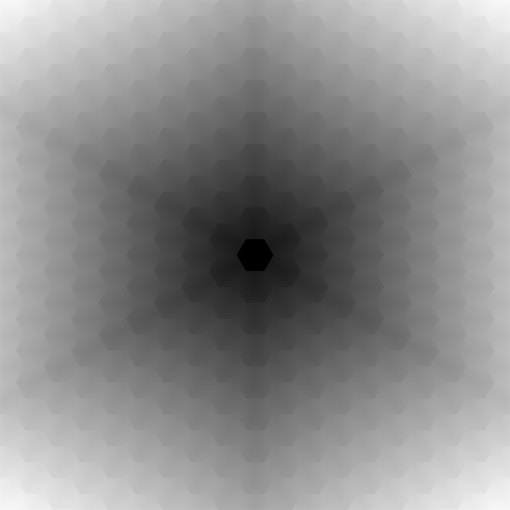

This technique is something I worked on for the game Busharium, on which I was the sole programmer. Click here for my writeup on making the game, as well as links for playing the game, or viewing the source code.
We needed a way to demonstrate the border of play in the game. This border expands as the player progresses so we really wanted to have a way to transition smoothly from one radius to the next. The complicated aspect is we wanted it to fit to a hexgrid. After spending a good bit of time researching, I was unable to find any examples of someone doing this, or use of the technique I'll be describing.
So first step, and by far the most complicated part of the process, was
to generate a distance field to use in a shader that would render the fog.
If you would rather skip to the method I went with, click here.
Below are the different methods I brainstormed:
My first thought was essentially to run a compute shader that would perform SAT (Seperate Axis Theorum) to generate an SDF (Signed Distance Field) of the playable space. This would run each time the radius of the fog would change. It became clear very quickly that this wasn't going to work out, due to the amount of branching that would be required. It was going to take a good bit of work to get going and I was very concerned it wouldn't be performant. In theory if it took too long I could generate a map in advance while the player was playing, but since we wanted a nice transition that wouldn't be feasible for memory.
The second approach was a lot more promising performance-wise, and something I discussed with a mentor (Finn Morgan). Since only the space near the edge of the playable space would ever have a gradient of fog, thats all we'd need to worry about generating distance information for. Additionally, since the idea was for the outer edge of the playable space to be fully in fog, but have it spill onto the outer tiles a bit, it didn't really need to be an SDF. It could just be a UDF (Unsigned Distance Field).
The method we discussed essentially involved having a premade UDF of a single hexagon, and doing a top-down orthographic render of the scene, drawing this image on all the tiles a distance of the radius +1 from the centre. These drawn UDFs would be sized such that the outer tiles would haved the distance information drawn onto them using the GL_MIN blend method. After getting my head around the details properly though, it became clear to me that this wouldn't be able to handle the transition to other radii, as there was no way to render intermediate stages. Different radii have different amounts of outer hexagons, and this technique relied on rendering whole hexagons.
I realised I could reuse my existing hex-coord conversion functions to generate distance information in "Hex-Space". This would allow me to set each pixel in a buffer's colour to be the distance from the hex its contained in, to the centre. Then all I'd need to do is generate the fractional portion, and remap it when rendering it (to only display fog at the desired ranges). One of the biggest benefits of this idea is that it would be a static image that never changes, and therefore doesn't need to be generated at runtime. I'll go into this more in the next sections as its the method I went with.
The step I knew would be easy to implement was getting the 'tile distance'. This is basically just how many hex tiles away from the centre a given pixel is. All I needed to do was convert the pixel coordinates into axial (hex) coordinates, and get the magnitude of their offset from the centre. You can see above how this looks in an image.
The more tricky step was to get distances within the hex tiles. This couldn't just be a standard distance equation because different sections of the hex grid will vary in pixel distance by too much. The metric I ended up going with was using the distance from the border to the next highest magnitude. This meant I would essentially do an oriented sweep within each tile from each edge facing a further tile, until each of the pixels in the hex were filled. This resulted in tiles with gradients that lined up with their neighbours.
The only thing left to do now was combine the two values together, and render the fog! But there was a problem. Floating point precision is limited, and the two values use different value ranges. The 'tile distance' ranges from integers of 0 to N (where N is the radius of the hex grid), and 'sub-tile distance' ranges from floats of 0.0f to 1.0f. This meant that the further tiles in the image would lose detail in the gradient and cause the banding effect seen above.
The first thing I tried to fix the banding was using doubles for the equations since they were never going to be performed at runtime. This helped a bit, but the image format I was using only supports single precision floats. So then I decided to save the values into two different channels in the texture. The only remaining problem is that the format I'm using utilises a shared exponent for each channel. So to get around that I simply divide the 'tile distance' by 10.0f, meaning I'd need to multiply it by 10.0f in the shader used to render it.
When using the fogmap you have access to a wide range of values, but through clamping and remapping it can be used to
render fog in only certain ranges. The way its rendered could vary, from just displaying the value to the screen,
to indexing into a noise map, or even as a value to be used in volumetrics.
As a basic proof that it was working I just displayed the remapped and clamped fog value.
The ranges could be changed at runtime to animate the fog moving.
Busharium (the game this was for), is a heavily stylised game. The goal the artists had was for any frame of the game to look like a watercolour painting, drawing inspiration from Australian watercolour, and Ken Sugimori's original Pokemon concepts. The game didn't really have much use of gradients so I simplified the rendering to make it so any given pixel was either in fog, or out of fog, no partial values. I also set up some noise and animated it over time to bring some more life to it, and displayed an outline like the game's assets have.
Overall I'm really happy with how this technique came out. Being able to animate the fog moving is an effect that
added a lot to the sense of progression in the game. I imagine this could be used in other games that take place
on a hex grid, though I do see it being limited in use since it can only be used for a uniform expansion.
I'd be interested to see if I could work out a way to smooth the gradient a bit more at the seams between
layers, as when animating it with a range instead of a cutoff the thickness of the gradient shifts. I'm not entirely
sure if that would even be possible due to the nature of hexagonal coordinates, but I'd be interested to investigate
that in the future.
The technique met all the needs of this project though and for that I am happy.
This was a really interesting research project, and I'm glad for the opportunity to fun free with it and experiment.
It was a good opportunity to practice my skills in graphics programming, debugging, and algorithms. And it was very
fulfilling and satisfying coming out of it with a cool looking technique.
I've often used and tweaked techniques described by others, but this was one of my first experiences developing one
myself, and the interest I recieved from my peers was very encouraging. I'd love to get the chance to develop new
techniques like this again in the future.